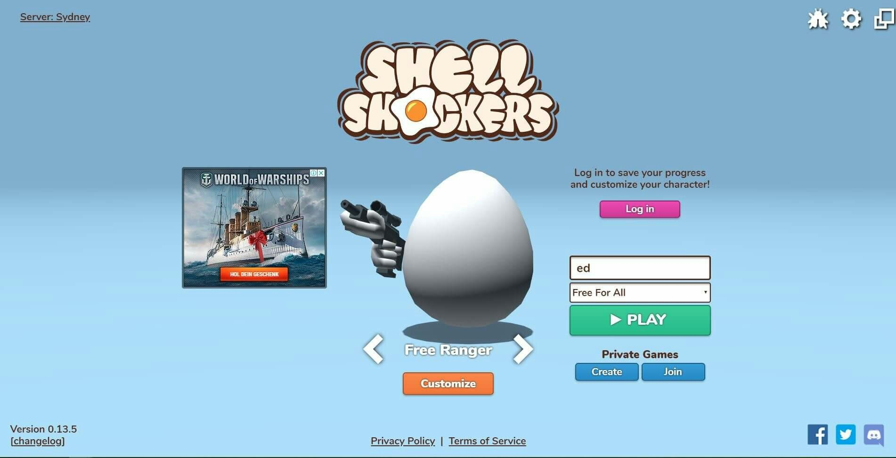
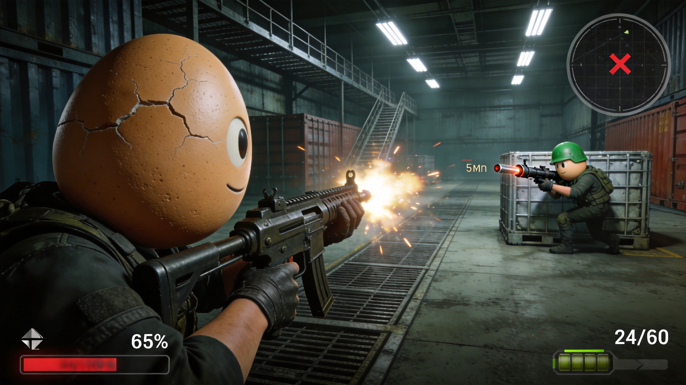
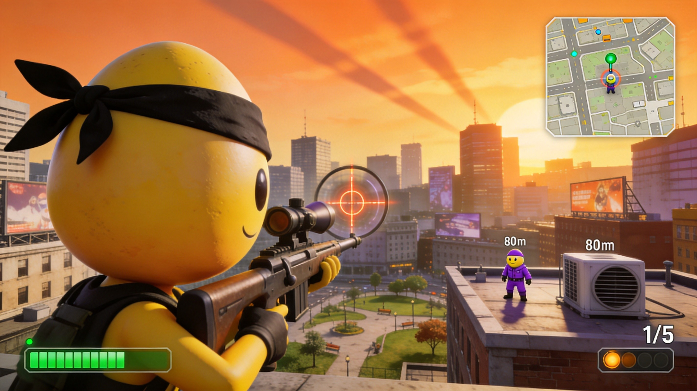
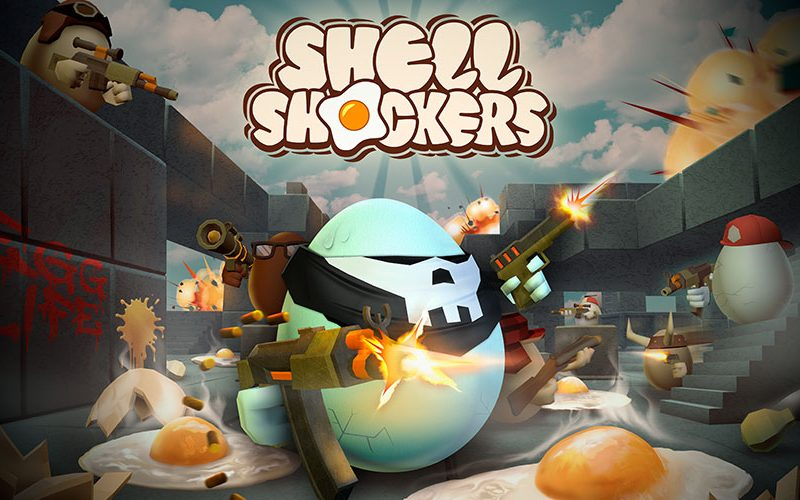

Shell Shockers is a fast-paced first-person shooter where you play as an armed egg battling other eggs in various multiplayer modes. The quirky premise—shooting eggs with guns—belies serious tactical gameplay. This guide covers everything from choosing the right class to advanced combat techniques that will help you climb the leaderboards.
🎯 Class Overview

EggK-47
The EggK-47 is the assault rifle class, perfect for beginners and versatile players. It offers a balance of fire rate, accuracy, and damage. This is your go-to class for most situations.
- Fire Rate: Medium
- Damage: Medium
- Range: Medium-Long
- Best For: General gameplay, all skill levels
RPEGG
The RPEGG is a rocket launcher that deals massive area damage. High risk, high reward—miss and you're vulnerable, hit and you rack up kills quickly.
- Fire Rate: Very Slow
- Damage: Very High
- Range: Medium
- Best For: Room clearing, ambush tactics
Whisker
The Whisker is a shotgun class devastating at close range. One or two shots can eliminate opponents, but you're vulnerable at distance.
- Fire Rate: Slow
- Damage: Very High (close range)
- Range: Very Short
- Best For: Aggressive rushers, map knowledge experts
Scrambler
The Scrambler is a sub-machine gun ideal for mobile combat. High fire rate with lower damage per shot, best used in close-quarters corridors.
- Fire Rate: Very High
- Damage: Low-Medium
- Range: Short
- Best For: Fast-paced gameplay, flanking
Egg Stirrer
The Egg Stirrer is a melee weapon for stealth kills. High damage but requires getting close without being detected.
- Fire Rate: Medium
- Damage: Very High
- Range: Melee
- Best For: Stealth players, trophy hunters
🔫 Weapon Comparison
Choosing Your Loadout
Your primary weapon defines your playstyle. Consider these factors: Map Size (smaller maps favor shotguns and SMGs), Game Mode (some weapons excel in specific modes), Your Skill Level (start with versatile weapons, specialize later).
Weapon Stats
- EggK-47: Damage ★★★, Fire Rate ★★★, Accuracy ★★★★
- RPEGG: Damage ★★★★★, Fire Rate ★, Accuracy ★★★
- Whisker: Damage ★★★★★, Fire Rate ★, Accuracy ★
- Scrambler: Damage ★★, Fire Rate ★★★★★, Accuracy ★★
Never run out of ammo in a firefight. Always check your ammo count and reload before entering high-risk areas. Better to reload early than to be caught empty.
🗺️ Map Strategies

Entryways
Entryways is a medium-sized map with multiple corridors. Control the center to have sight lines on multiple entry points. The EggK-47 or RPEGG work well here.
Farmageddon
Farmageddon features an outdoor layout with scattered structures. Use cover and elevation to your advantage. Sniper positions can dominate, but beware of flanking players.
Isle of the Egg
This tropical map has narrow bridges and wide open areas. Control bridge chokepoints or use smoke grenades to cross safely. Shotguns excel in the tight spaces.
General Map Tips
- Learn spawn points to predict enemy locations
- Use grenades to flush enemies from cover
- Listen for footsteps to anticipate ambushes
- Check corners before entering rooms
🎮 Game Modes

Free For All
Everyone against everyone. Survive and get the most kills before time runs out. Use stealth and positioning to avoid being flanked.
Teams
Two teams battle for supremacy. Stick with teammates, communicate enemy positions, and coordinate pushes. Team composition matters more than individual skill.
Grill or Be Grilled
One player is "It" with increased speed and firepower. Survive to score points as a runner, or catch enemies as It. This mode rewards mobile playstyles.
Capture the Egg
Teams compete to capture the enemy egg and return it to base. Balance offense and defense—don't leave your base undefended while chasing.
⚔️ Combat Tips
1. Crosshair Placement
Keep your crosshair at head height when entering rooms or rounding corners. This reduces the time needed to aim and land critical shots.
2. Movement Shooting
Shell Shockers allows accurate shooting while moving. Strafe side to side while firing to make yourself a harder target. Jump shots can also throw off enemies.
3. Grenade Usage
Grenades are devastating in Shell Shockers. Cook grenades (hold before throwing) to reduce enemy reaction time. Aim for clusters of enemies or room entrances.
4. Flanking
Catching enemies from the side or behind deals bonus damage. Use alternative routes to get behind the enemy team. The Whisker and Scrambler excel at flanking.
5. Awareness
Check your surroundings constantly. Listen for audio cues (footsteps, gunshots, reloads) and watch the kill feed to track enemy positions.
💎 Pro Tips

Practice aim in offline mode. Shell Shockers offers training modes where you can practice your aim without pressure from other players.
Learn the maps thoroughly. Knowing alternate routes, camping spots, and chokepoints gives you a massive advantage over less experienced players.
Don't overcommit. If a fight isn't going your way, retreat to heal and reposition. Dying repeatedly gives the enemy team momentum.
Play with friends. Shell Shockers is much more fun and effective with a coordinated team. Use voice chat to call out enemies and plan strategies.
❓ Frequently Asked Questions

What is the best class for beginners?
The EggK-47 is the best starting class. It's versatile, easy to use, and doesn't require precise aim. Master this class before trying more specialized weapons.
How do I improve my aim?
Practice regularly in training mode. Focus on tracking moving targets and leading your shots for moving enemies. Lower your mouse sensitivity for more precise aiming.
Is the RPEGG worth using?
Yes, but it's situational. The RPEGG excels in tight spaces and against groups of enemies. In open areas, it's less effective. Use it in smaller maps or for room clearing.
How do I counter shotgun users?
Keep distance from Whisker users. If one gets close, jump and strafe while firing. Shotguns have very short range, so maintaining distance is key.
What are the best strategies for Teams mode?
Stay with your team, communicate enemy positions, and push together. Don't run ahead alone. Coordinate with your team about when to push objectives and when to fall back.
📝 Conclusion
Shell Shockers combines quirky humor with serious FPS gameplay. Finding the right class, mastering your weapons, and learning the maps will dramatically improve your performance. Remember: every match is a chance to learn and improve.
Ready to crack some shells? Jump into Shell Shockers and start practicing these strategies. See you on the battlefield!
Last updated: January 20, 2024
Written by the iogameguide.com team